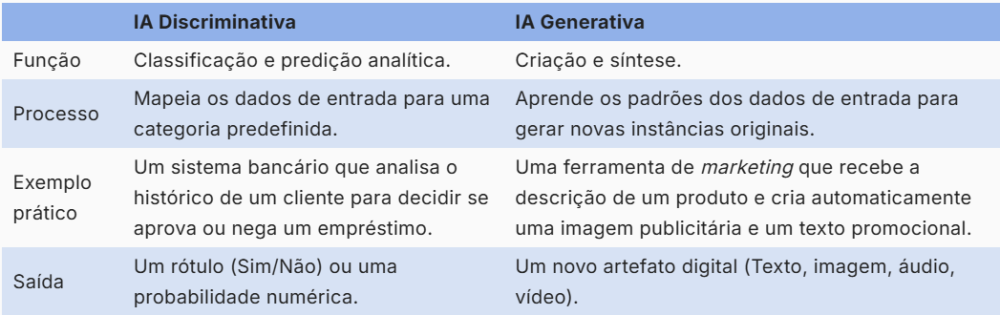
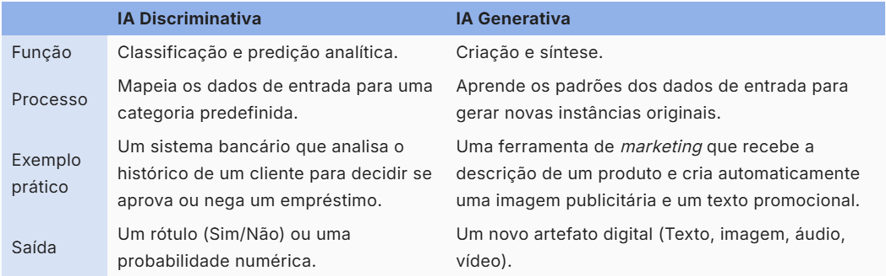
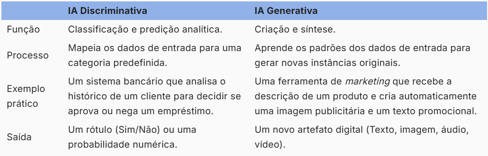
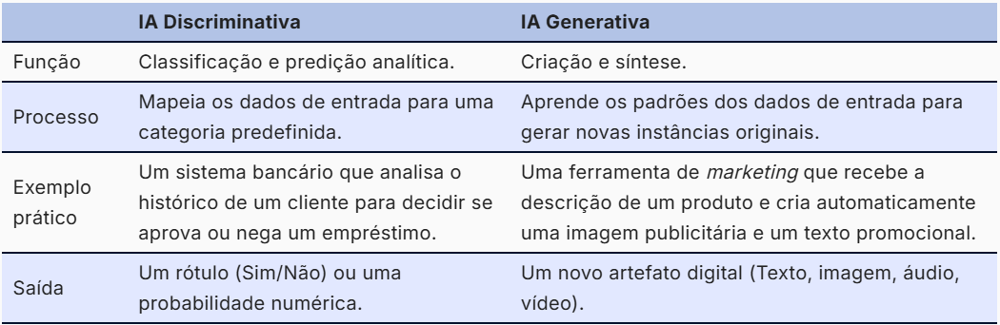
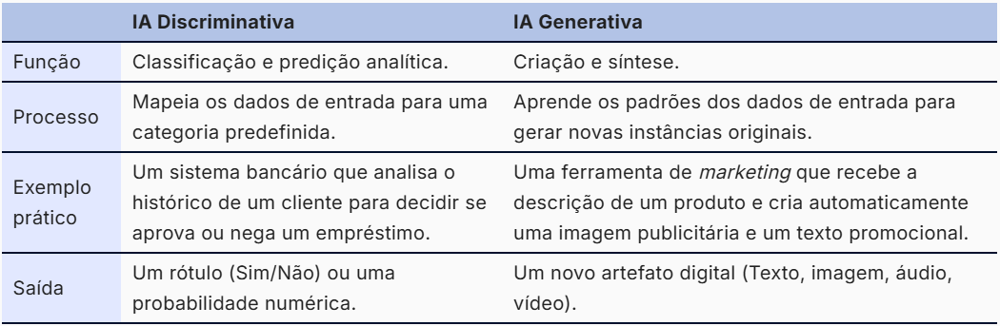
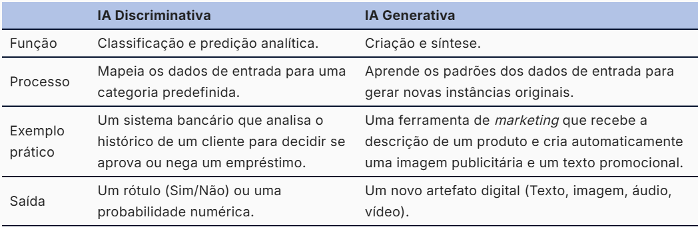

Questões visuais dos recursos devem ser consultadas no Figma:
Teste Técnico – Figma;
Caso opte por uso de IA, recomendamos a ferramenta oficial de
Inteligência Artificial do SENAI CIMATEC, o Copilot;
Prazo de entrega 21 de setembro de 2026 às 23h59.
Agora que você já conhece as orientações gerais do teste, é hora de
iniciar a parte prática. O primeiro desafio envolve a construção de uma
interação simples, na qual conteúdo e comportamento devem trabalhar juntos
para proporcionar uma experiência clara ao usuário. Vamos começar!
Recurso 1 - OnClick
Ao clicar no card ou na
região da seta, o conteúdo associado deverá ser revelado,
seguindo o comportamento visual de abertura demonstrado no vídeo, semelhante
à abertura de um envelope.
Ao clicar novamente no mesmo card ou na seta correspondente, o
componente deverá retornar ao seu estado inicial.
Utilize os títulos e textos fornecidos na seção
"Conteúdo OnClick" para montar o recurso. A referência
visual deverá seguir o Figma disponibilizado.
O recurso também deverá se adaptar corretamente à visualização em
dispositivos móveis, considerando as orientações gerais da atividade.
Conteúdo OnClick
Barcelona, na Espanha, passou por uma profunda transformação urbana a
partir dos Jogos Olímpicos de 1992. Nesse contexto, o município
integrou políticas de acessibilidade ao processo de renovação,
impulsionado também pela mobilização de movimentos de pessoas com
deficiência que reivindicavam o direito à cidade. Ao longo dos anos,
essa diretriz consolidou uma visão urbana orientada pela diversidade,
pelo pertencimento e pela inclusão (Maricato, 2015).
Copenhague, capital da Dinamarca, é reconhecida como uma das cidades
mais acessíveis e sustentáveis da Europa. Esse destaque resulta de
políticas urbanas que incorporam a inclusão como princípio
estruturante, priorizando o acesso universal ao espaço público, à
mobilidade e aos serviços (Gehl, 2013).
No Brasil, a cidade de Curitiba é frequentemente destacada na
literatura urbanística pela incorporação de diretrizes de
acessibilidade em suas políticas de mobilidade e planejamento urbano.
No sistema de transporte coletivo, estudos e documentos institucionais
indicam a adoção progressiva de veículos adaptados, com dispositivos
de acessibilidade, como elevadores, espaços reservados e sistemas de
informação visual e sonora, resultado de políticas públicas conduzidas
pela URBS (URBS, 2020 e Vasconcellos, 2014).
Na infraestrutura urbana, é necessário maior rigor na utilização de
dados. As informações anteriormente atribuídas ao IBGE (2022) não
constam diretamente no Censo Demográfico, mas sim na Pesquisa de
Informações Básicas Municipais (MUNIC) e em levantamentos específicos
sobre características do entorno dos domicílios, como a presença de
calçadas, iluminação e pavimentação. Esses dados podem ser acessados
por meio da plataforma SIDRA ou das publicações temáticas do IBGE.
Assim, recomenda-se reformular a afirmação de forma mais cautelosa,
reconhecendo que, embora haja avanços na infraestrutura urbana,
persistem desafios relacionados à continuidade das calçadas e à
adequação às normas de acessibilidade (IBGE, 2020; Maricato, 2015).
Ao explorar uma interação pontual, o próximo passo é trabalhar com uma
estrutura que organiza e apresenta informações de forma progressiva. No
infográfico vertical, além do comportamento dos elementos, será importante
considerar a sequência de navegação e a disposição dos conteúdos ao longo
da página. Avance!
Recurso 2 - Infográfico Vertical
No estado inicial, deverá ser exibido apenas o
primeiro ícone de navegação, centralizado no recurso.
Ao selecionar esse ícone:
ele deverá ser reposicionado para a lateral esquerda;
o conteúdo correspondente deverá ser exibido;
o próximo ícone deverá aparecer na sequência da
linha vertical de navegação, conforme apresentado na
referência visual.
A cada novo ícone selecionado, o mesmo comportamento deverá se repetir: o
conteúdo correspondente será exibido e o próximo ícone será disponibilizado
na continuidade da linha vertical.
Os conteúdos já abertos deverão permanecer visíveis, formando
progressivamente o infográfico na vertical.
Após a abertura do último item, a navegação deverá direcionar novamente para
o
primeiro ícone, mantendo todos os conteúdos anteriormente
exibidos.
A cada abertura, a página deverá ser reposicionada de forma que o conteúdo
recém-selecionado fique visível logo abaixo do header da página.
Os títulos, textos e imagens necessários estão disponíveis na seção
"Conteúdo Infográfico". A composição visual deverá seguir o
Figma e o comportamento deverá seguir o vídeo de referência.
O recurso deverá funcionar tanto em desktop quanto em dispositivos móveis,
respeitando as orientações gerais da atividade.
Conteúdo Infográfico
Barcelona
Barcelona, na Espanha, passou por uma profunda transformação urbana a
partir dos Jogos Olímpicos de 1992. Nesse contexto, o município integrou
políticas de acessibilidade ao processo de renovação, impulsionado também
pela mobilização de movimentos de pessoas com deficiência que reivindicavam
o direito à cidade. Ao longo dos anos, essa diretriz consolidou uma visão
urbana orientada pela diversidade, pelo pertencimento e pela inclusão
(Maricato, 2015).
No sistema de transporte, mais de 90% das estações de metrô possuem
elevadores, rampas, sinalização tátil e recursos sonoros e visuais. A frota
de ônibus é adaptada, com piso baixo, rampas retráteis e espaços reservados.
Nas vias públicas, calçadas niveladas, faixas rebaixadas, semáforos sonoros
e sinalização tátil asseguram autonomia e segurança aos pedestres.
O planejamento urbano incorpora o Desenho Universal às políticas de
mobilidade, habitação, educação e cultura. Aplicativos como TMB App e SMOU
informam rotas acessíveis e o status de elevadores em tempo real, tornando
Barcelona uma referência internacional em acessibilidade urbana.
Copenhague
Copenhague, capital da Dinamarca, é reconhecida como uma das cidades mais
acessíveis e sustentáveis da Europa. Esse destaque resulta de políticas
urbanas que incorporam a inclusão como princípio estruturante, priorizando
o acesso universal ao espaço público, à mobilidade e aos serviços (Gehl, 2013).
O transporte público possui rampas, espaços para cadeiras de rodas,
elevadores e sinalização tátil, sonora e visual. Nas ruas, calçadas largas,
niveladas e bem conservadas, associadas a pisos táteis e travessias
rebaixadas, garantem deslocamentos seguros.
A cidade também oferece bicicletas adaptadas e espaços públicos e culturais
com entradas, banheiros, audioguias e materiais acessíveis. O planejamento
urbano passou a priorizar as pessoas, a escala humana, a permanência e a
convivência (Gehl, 2013; Maricato, 2015).
Curitiba
No Brasil, Curitiba é frequentemente destacada pela incorporação de
diretrizes de acessibilidade em suas políticas de mobilidade e planejamento
urbano. O sistema de transporte coletivo adotou progressivamente veículos
adaptados, com elevadores, espaços reservados e sistemas de informação
visual e sonora, resultado de políticas conduzidas pela URBS.
Embora existam avanços na infraestrutura urbana, persistem desafios
relacionados à continuidade das calçadas e à adequação às normas de
acessibilidade. Essas informações devem ser analisadas com base em dados da
MUNIC, do IBGE e de levantamentos específicos sobre o entorno dos domicílios.
A experiência de Curitiba evidencia as possibilidades e os desafios da
implementação de políticas inclusivas no contexto brasileiro, especialmente
quando articuladas às desigualdades socioespaciais (Vasconcellos, 2014;
Maricato, 2015).
Conteúdo Infográfico
Título- Barcelona
Texto associado -
Barcelona, na Espanha, passou por uma profunda transformação urbana
a partir dos Jogos Olímpicos de 1992. Nesse contexto, o município
integrou políticas de acessibilidade ao processo de renovação,
impulsionado também pela mobilização de movimentos de pessoas com
deficiência que reivindicavam o direito à cidade. Ao longo dos anos,
essa diretriz consolidou uma visão urbana orientada pela
diversidade, pelo pertencimento e pela inclusão (Maricato, 2015).
No sistema de transporte, a acessibilidade é amplamente garantida:
mais de 90% das estações de metrô possuem elevadores, rampas,
sinalização tátil e recursos sonoros e visuais. Diante disso, a
frota de ônibus é totalmente adaptada, com piso baixo, rampas
retráteis e espaços reservados, e os bondes seguem o mesmo padrão.
Nas vias públicas, calçadas niveladas, faixas rebaixadas, semáforos
sonoros e sinalização tátil asseguram autonomia e segurança aos
pedestres. Por isso, as superquadras (superilles) reforçam essa
lógica, ao priorizar pedestres e ciclistas e ampliar os espaços de
convivência. As ciclovias, contínuas e bem conectadas, incluem
opções acessíveis no sistema público Bicing (Vasconcellos, 2014).
O planejamento urbano de Barcelona incorpora o Desenho Universal
como princípio estruturante, integrando a acessibilidade às
políticas de mobilidade, habitação, educação e cultura. Assim,
recursos tecnológicos, como os aplicativos TMB App e SMOU, informam
rotas acessíveis e o status de elevadores em tempo real,
complementados por mapas táteis e totens interativos. As decisões
são conduzidas de forma participativa, com atuação contínua do
Departamento de Acessibilidade Universal em diálogo com entidades e
usuários. A articulação entre vontade política, planejamento de
longo prazo e mobilização social tornou Barcelona uma referência
internacional em acessibilidade urbana (Maricato, 2015).
Título- Copenhague
Texto associado -
Copenhague, capital da Dinamarca, é reconhecida como uma das cidades
mais acessíveis e sustentáveis da Europa. Esse destaque resulta de
políticas urbanas que incorporam a inclusão como princípio
estruturante, priorizando o acesso universal ao espaço público, à
mobilidade e aos serviços (Gehl, 2013).
O transporte público é amplamente adaptado: todos os ônibus possuem
rampas e espaço para cadeiras de rodas, e os motoristas recebem
treinamento específico para atendimento acessível. O metrô é
integralmente acessível, com elevadores, sinalização tátil e
recursos sonoros e visuais em estações e trens. Nas ruas, calçadas
largas, niveladas e bem conservadas, associadas a pisos táteis e
travessias rebaixadas, garantem deslocamentos seguros (Vasconcellos,
2014 e Maricato, 2015).
A bicicleta, símbolo da cidade, também integra a política de
inclusão. Há triciclos e modelos adaptados para empréstimo, e as
ciclovias são projetadas para oferecer conforto e segurança a todos
os usuários. Espaços públicos e culturais seguem normas rigorosas de
acessibilidade, com entradas adaptadas, banheiros acessíveis,
audioguias e materiais em braile. A prefeitura exige que novos
projetos arquitetônicos adotem soluções inclusivas desde a
concepção, articulando acessibilidade e sustentabilidade (Gehl,
2013, Leite e Awad, 2012).
Essa transformação ganha força a partir da segunda metade do século
XX, quando a cidade passa a reorientar seu planejamento, deslocando
o foco do automóvel para as pessoas. Conforme argumenta Jan Gehl,
essa mudança implicou uma reconfiguração do espaço público baseada
na escala humana, na permanência e na convivência. Desse jeito, a
incorporação de princípios associados ao Desenho Universal e à
mobilidade ativa contribuiu para consolidar uma cultura urbana mais
inclusiva. Assim como outros casos frequentemente analisados, como
Barcelona, Copenhague demonstra que planejamento consistente,
continuidade institucional e participação social são elementos
fundamentais para a construção de cidades mais acessíveis e
equitativas (Gehl, 2013 e Maricato, 2015).
Título- Curítiba
Texto associado
No Brasil, a cidade de Curitiba é frequentemente destacada na
literatura urbanística pela incorporação de diretrizes de
acessibilidade em suas políticas de mobilidade e planejamento
urbano. No sistema de transporte coletivo, estudos e documentos
institucionais indicam a adoção progressiva de veículos adaptados,
com dispositivos de acessibilidade, como elevadores, espaços
reservados e sistemas de informação visual e sonora, resultado de
políticas públicas conduzidas pela URBS (URBS, 2020 e Vasconcellos,
2014).
Na infraestrutura urbana, é necessário maior rigor na utilização de
dados. As informações anteriormente atribuídas ao IBGE (2022) não
constam diretamente no Censo Demográfico, mas sim na Pesquisa de
Informações Básicas Municipais (MUNIC) e em levantamentos
específicos sobre características do entorno dos domicílios, como a
presença de calçadas, iluminação e pavimentação. Esses dados podem
ser acessados por meio da plataforma SIDRA ou das publicações
temáticas do IBGE. Assim, recomenda-se reformular a afirmação de
forma mais cautelosa, reconhecendo que, embora haja avanços na
infraestrutura urbana, persistem desafios relacionados à
continuidade das calçadas e à adequação às normas de acessibilidade
(IBGE, 2020; Maricato, 2015).
Esses avanços estão associados a uma estrutura institucional que
articula diferentes órgãos municipais. A existência de instâncias
técnicas e legislativas voltadas à acessibilidade, bem como a
produção de materiais institucionais, como guias e roteiros
acessíveis, pode ser verificada em documentos oficiais da Prefeitura
de Curitiba e em publicações voltadas ao turismo acessível. Desse
modo, espaços públicos relevantes, como o Jardim Botânico, têm sido
objeto de intervenções que buscam ampliar as condições de acesso,
ainda que de forma desigual no território (Prefeitura de Curitiba,
2019 e Ministério do Turismo, 2021).
Curitiba, portanto, apresenta avanços importantes na incorporação da
acessibilidade como diretriz de gestão urbana, ainda que esses
processos ocorram de maneira gradual e com limitações. Mais do que
um modelo acabado, a experiência da cidade evidencia as
possibilidades e os desafios da implementação de políticas
inclusivas no contexto brasileiro, especialmente quando articuladas
às desigualdades socioespaciais que caracterizam as cidades do país
(Vasconcellos, 2014 e Maricato, 2015).
Depois de trabalhar com interação, navegação e organização de conteúdos, é
hora de voltar a atenção aos detalhes visuais e estruturais. Na próxima
atividade, você deverá analisar diferentes referências e reproduzir suas
características de forma clara e consistente. Continue!
Correção Tabela
Nesta atividade, serão apresentadas
seis tabelas de referência, cada uma seguida por uma área
identificada como "Tabela resposta".
Para cada referência, reproduza a tabela correspondente na área de resposta
imediatamente abaixo, mantendo o conteúdo apresentado e observando as
características visuais da tabela de referência.
Durante a reprodução, considere aspectos como:
estrutura e distribuição das células;
alinhamento dos conteúdos;
cores e aplicação dos fundos;
bordas e divisões entre células;
espaçamentos;
estilos e posicionamento dos textos;
dimensões de linhas e colunas visualmente coerentes com a referência, sem
necessidade de reprodução exata.
As tabelas utilizam como cores principais:
Cor primária:#91b1e9;
Cor secundária:#d7e2f4.
Cada tabela deverá ser analisada e reproduzida
individualmente, de acordo com sua respectiva referência.
a
b
c
d
e
1
2
3
4
5
Tabela referência 1:

Tabela resposta:
Tabela referência 2:

Tabela resposta:
Tabela referência 3:

Tabela resposta:
Tabela referência 4:

Tabela resposta:
Tabela referência 5:

Tabela resposta:
Tabela referência 6:

Tabela resposta:
Pense a respeito!
Ao longo deste teste, foi possível colocar em prática diferentes
aspectos do desenvolvimento de recursos educacionais digitais. As
atividades envolveram a construção de interações, a organização
progressiva de conteúdos e a reprodução de estruturas visuais a partir
de referências. Além do funcionamento técnico, foram considerados
aspectos como responsividade, clareza visual, organização do código e
atenção aos detalhes. Esperamos que esta experiência tenha permitido
demonstrar não apenas seus conhecimentos técnicos, mas também sua
forma de analisar, interpretar e solucionar os desafios apresentados.